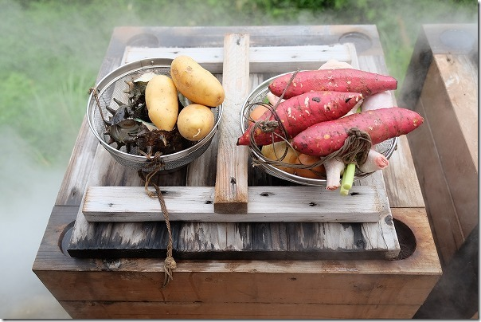
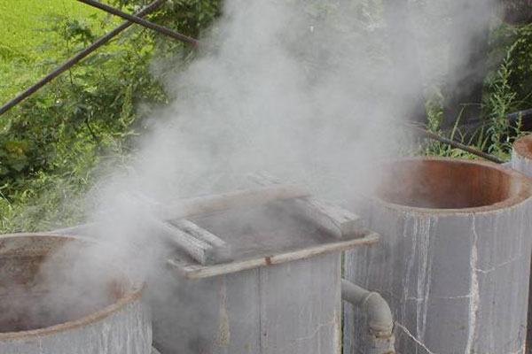
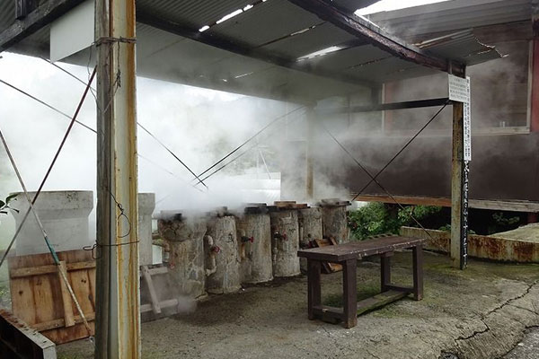
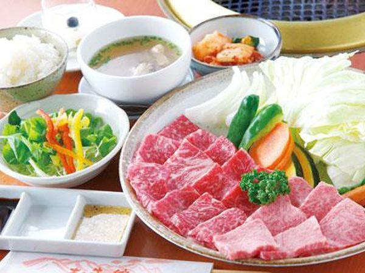
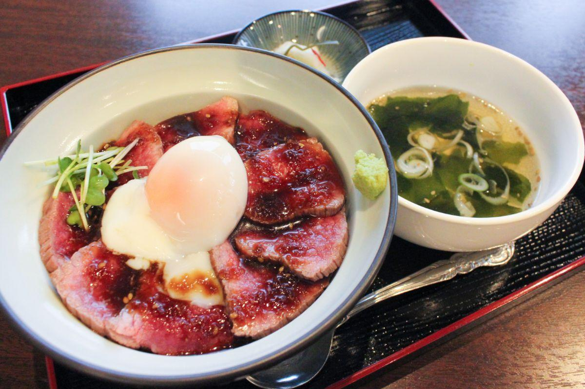
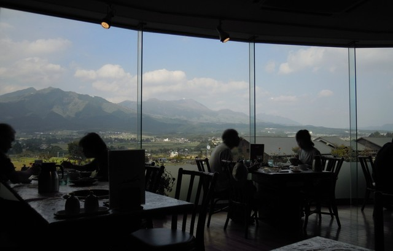

南阿蘇グルメ
わいた温泉地獄蒸し



温泉の地熱を利用した地獄蒸し。温泉を利用すれば、無料で蒸し釜を利用することができます。
食材は現地で購入も可能で、温泉に入っている間（30分ほど）で蒸しあがります。
温泉の蒸気で蒸した食材は、素材の旨みが凝縮され、また余分な油を落とすので美味しくてヘルシーです。
住所〒869-2504
熊本県阿蘇郡小国町西里岳の湯2816小国町西里2816（ゆけむり茶屋・わいた温泉組合）
TEL0967-46-5750（わいた温泉組合）
詳細情報
Map
あか牛の館



阿蘇地方の名産「あか牛」の肉質は、赤身が多くかつ適度な脂肪分も含み、旨味と柔らかさ・ヘルシーさを兼ね備えており、
お腹いっぱい食べてももたれにくいと評判。女性の方や、メタボは気になるが美味しい物は止められない！という方に
おすすめです。あか牛の館」は、豊かな南阿蘇の草原で育った、安心・安全な「あか牛」専門の焼肉レストランです。
住所〒869-1412
熊本県阿蘇郡南阿蘇村久石2815番地
TEL0967-67-0848
詳細情報
Map
ページトップへ戻る